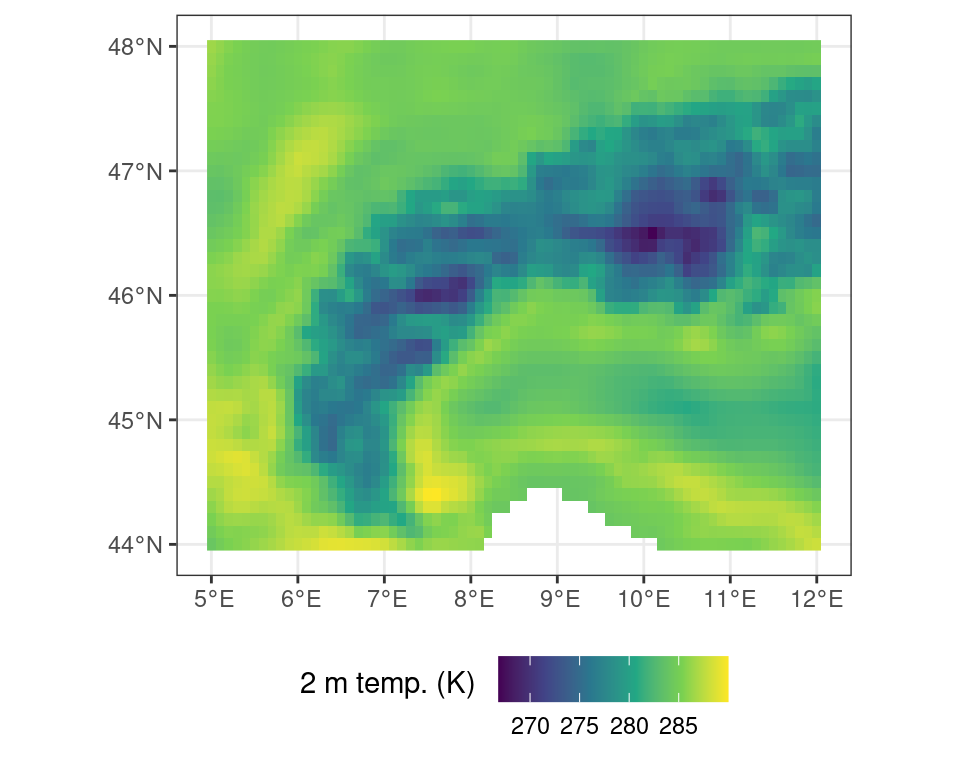
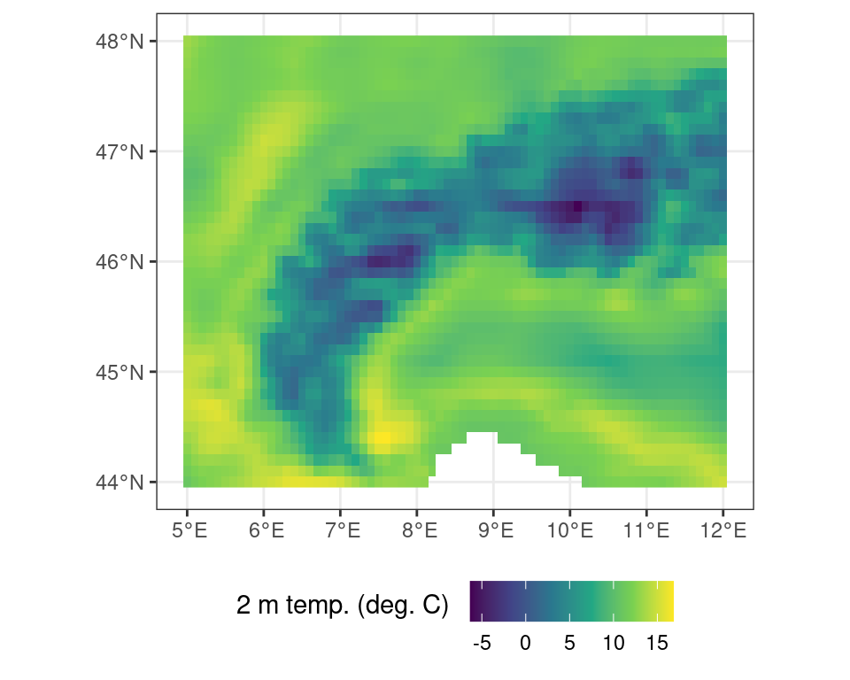
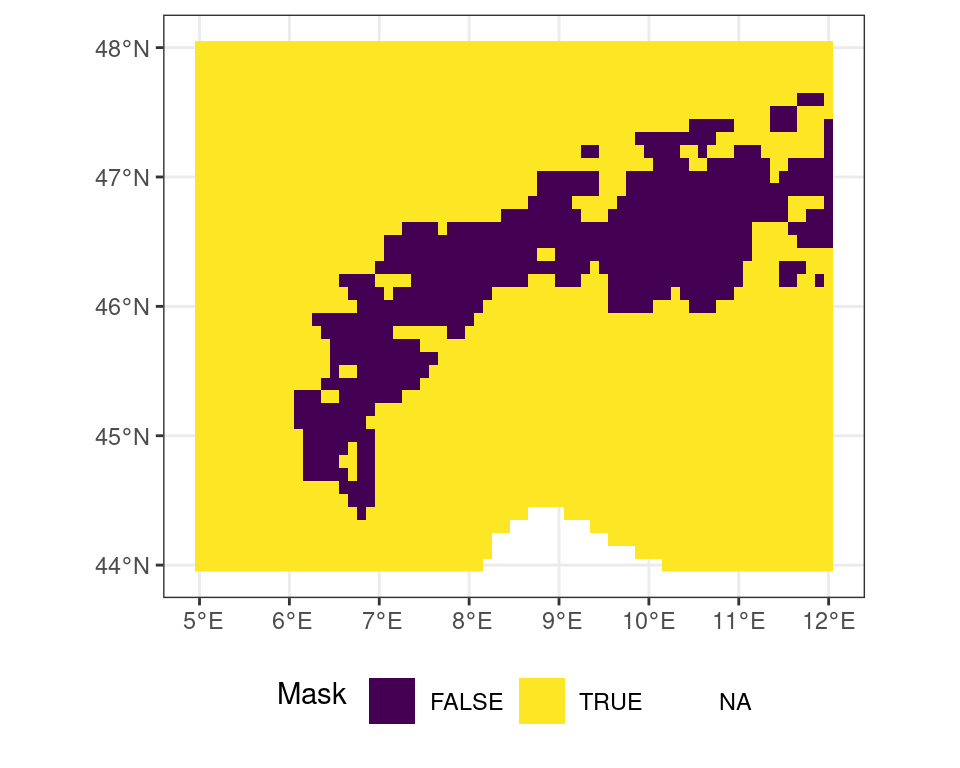
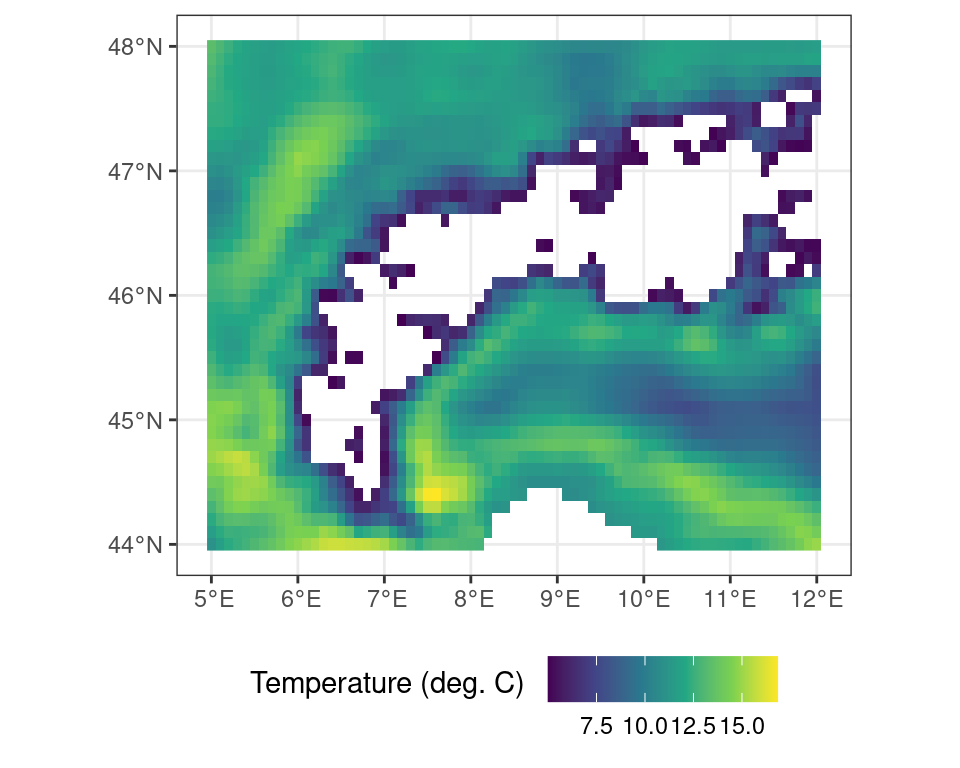
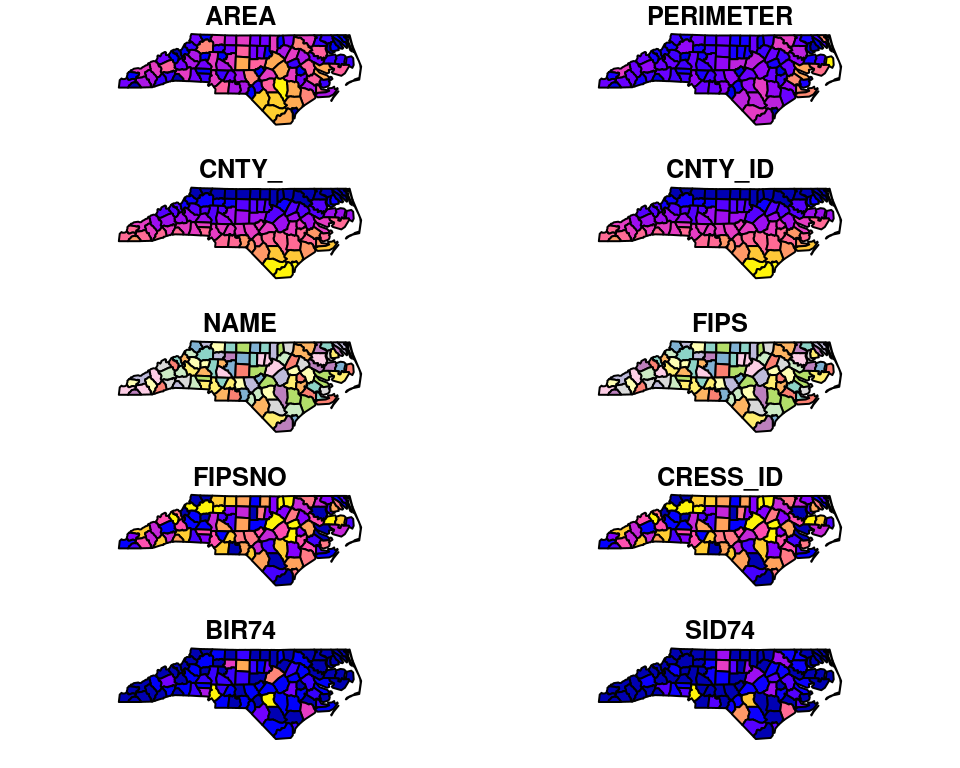
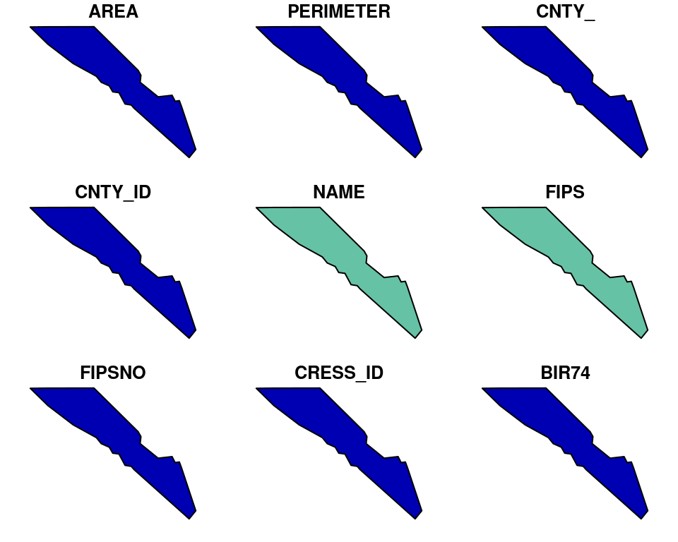
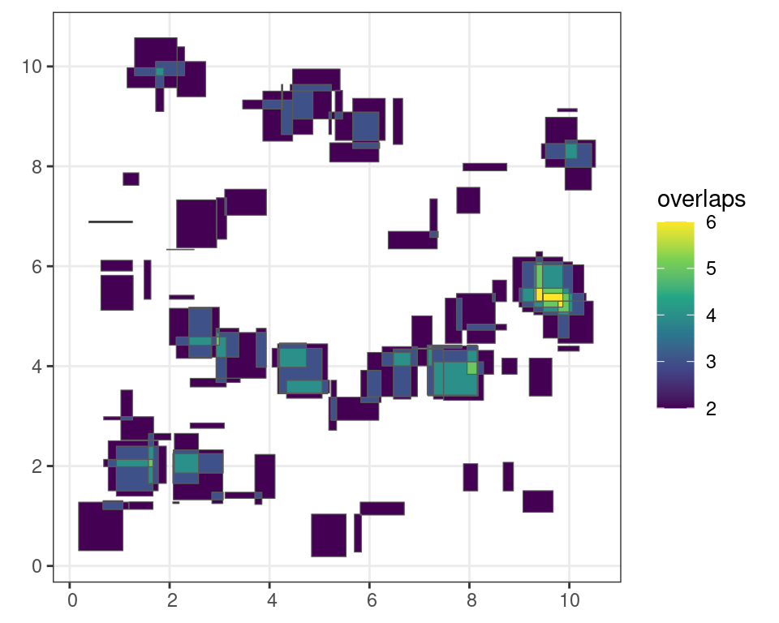

3 Geospatial data in R
Geospatial data procesing in R follows the standard raster vs. vector data model dichotomy as seen throughout most geographic information systems (GIS, Figure 3.1). Here, raster data represent continuous data on a (fixed) grid, while vector data describe geographic features using points, lines and polygons (shapes). The main difference between both types is their sensitivity to resolution, which is predetermined in the case of raster data, while undetermined using a vector topology.
This difference in data models used also determines the advantages and disadvantages of both models, where vector topology is resolution independent data efficient in storage the handling if mathematical (topological) operations can be computationally expensive. On the other hand raster data has a fixed lower limit to its resolution, while often being computationally efficient when modelling.
{kind=link}
Most geospatial data handling in R happens using lower level GDAL/OGR bindings. The GDAL/OGR library is an open source framework for geospatial processing and is used across programming languages and geospatial frameworks or GIS systems (e.g. QGIS).
3.1 The R geospatial ecosystem
Spatio-temporal data often comes in the form of dense arrays, with space and time being array dimensions. Examples include socio-economic or demographic data, series of satellite images with multiple spectral bands, spatial simulations, and climate or weather model output.
A number of libraries (packages) make the use of this spatio-temporal data, and geo-computational work in R easy. However, the ecosystem has grown rapidly and therefore is continuously shifting. Unlike other processing environments this makes it at times hard to keep track of what or when to use a particular package.
Here, I give a quick overview of the basic functionality and their uses cases of all these packages, finally there will be a brief overview of some basic geospatial operations using terra and sf libraries (see Section 3.1.1 and Section 3.1.2). For a more extensive, deep dive, of all these packages I refer to Nowasad et al. (FIX REF).
3.1.1 The terra package
The terra package is the successor of the older raster package, but with a simpler interface. This package deals with both geographic raster and vector data, with the explicit requirement that raster data represent spatially continuous processes on a fixed (rectangular) grid.
Reading and inspecting data
# load the library
library(terra)
# read data from file
r <- terra::rast("demo_data.nc")We can inspect the meta data by calling the object:
print(r)class : SpatRaster
dimensions : 41, 71, 1 (nrow, ncol, nlyr)
resolution : 0.1, 0.1 (x, y)
extent : 4.95, 12.05, 43.95, 48.05 (xmin, xmax, ymin, ymax)
coord. ref. : lon/lat WGS 84
source : demo_data.nc
varname : t2m (2 metre temperature)
name : t2m
unit : K
time : 2022-01-01 12:00:00 UTC Or you can visualize the data by plotting the data (e.g. using plot()).
Code
ggplot() +
tidyterra::geom_spatraster(data = r) +
scale_fill_viridis_c(
na.value = NA,
name = "Temperature (K) \n"
) +
theme_bw() +
theme(
legend.position = "bottom"
)
Dedicated functions exist to extract the layer names (names()) and the time stamps (time()) if there is a time component to the data. These functions allow you to extract these data and use them in analysis.
time(r)[1] "2022-01-01 12:00:00 UTC"names(r)[1] "t2m"Basic math
Basic math or logical operations can be performed on maps using standard R notations. As shown above the data contains temperature data in Kelvin. You can convert this data from Kelvin to Celsius by subtracting 273.15 from all values in the data set.
# conversion from Kelvin to C
r_c <- r - 273.15Code
ggplot() +
tidyterra::geom_spatraster(data = r_c) +
scale_fill_viridis_c(
na.value = NA,
name = "Temperature (C) \n"
) +
theme_bw() +
theme(
legend.position = "bottom"
)
Logical operations work in the same way. You can create a mask of temperatures above 5C using a simple logical operation.
# all locations above freezing
# as a binary mask
m <- r_c > 5Code
ggplot() +
tidyterra::geom_spatraster(data = m) +
scale_fill_viridis_d(
name = "Mask \n"
) +
theme_bw() +
theme(
legend.position = "bottom"
)
You can exclude locations from calculations using masks. This is useful to restrict the region of interest of an analysis or limit edge cases of complex calculations beforehand. As an example you can mask out all values where the binary mask as generated above if FALSE (i.e. temperatures lower than 5C).
# all locations above freezing
# as a binary mask
r_m <- terra::mask(r_c, m, maskvalue = FALSE)Code
ggplot() +
tidyterra::geom_spatraster(data = r_m) +
scale_fill_viridis_c(
na.value = NA,
name = "Temperature (C) \n"
) +
theme_bw() +
theme(
legend.position = "bottom"
)
Writing and exporting data
The terra library uses pointers when referencing to data (in memory). This means that you can not save the object itself to resume your work later on. Saving the above masked map r_m using saveRDS(r_m, "data.rds") will only save a pointer to a memory space which will not exist when opening a new session. This is in contrast to for example operations on tabulated data (e.g. JSON, CSV files). As such, you need to save the output of your analysis using a formal geospatial data format using writeRaster().
To save masked temperature data in Celsius you would use:
# save data to file
terra::writeRaster(r_m, "celsius_data_masked.tif")Alternatively, but for small datasets only, you could convert the geospatial data to a long oriented data frame and save the data using standard methods to save tabulated data. However, you might loose critical meta-data on geographic projections etc. Using this method to save your work is not recommended unless you keep track of all ancillary meta-data separately.
# convert geospatial data to a
# data frame notation, where the flag
# xy = TRUE denotes that pixel coordinate
# details should be exported as well
df <- as.data.frame(r, xy = TRUE)
head(df) x y t2m
1 5.0 48 286.4682
2 5.1 48 286.0754
3 5.2 48 285.6437
4 5.3 48 285.3351
5 5.4 48 285.0714
6 5.5 48 284.84693.1.2 The sf package
Simple features are an open standard to store and access geographic data. The sf package provides a way to represent geospatial vector data as simple features in R. This results in nested data.frames or tibbles which adhere to the “tidy” data paradigm as previously described. They therefore are long oriented and support piped workflows on geometries. This standard reduces complexity and keeps geometry operations simple.
Reading and inspecting data
A lot of GIS vector data comes as shapefiles (.shp extention). An example shapefile is include in the sf package, and we can read it using:
# load library
library(sf)
# load included shapefile
nc <- sf::st_read(system.file("shape/nc.shp", package="sf"))Reading layer `nc' from data source
`/home/runner/.cache/R/renv/cache/v5/R-4.3/x86_64-pc-linux-gnu/sf/1.0-12/5b41b4f0bd22b38661d82205a87deb4b/sf/shape/nc.shp'
using driver `ESRI Shapefile'
Simple feature collection with 100 features and 14 fields
Geometry type: MULTIPOLYGON
Dimension: XY
Bounding box: xmin: -84.32385 ymin: 33.88199 xmax: -75.45698 ymax: 36.58965
Geodetic CRS: NAD27When printing the object you will be provided with an overview, when plotting the spatial data (using plot()) will be visualized (similar to the raster data above).
print(nc)Simple feature collection with 100 features and 14 fields
Geometry type: MULTIPOLYGON
Dimension: XY
Bounding box: xmin: -84.32385 ymin: 33.88199 xmax: -75.45698 ymax: 36.58965
Geodetic CRS: NAD27
First 10 features:
AREA PERIMETER CNTY_ CNTY_ID NAME FIPS FIPSNO CRESS_ID BIR74 SID74
1 0.114 1.442 1825 1825 Ashe 37009 37009 5 1091 1
2 0.061 1.231 1827 1827 Alleghany 37005 37005 3 487 0
3 0.143 1.630 1828 1828 Surry 37171 37171 86 3188 5
4 0.070 2.968 1831 1831 Currituck 37053 37053 27 508 1
5 0.153 2.206 1832 1832 Northampton 37131 37131 66 1421 9
6 0.097 1.670 1833 1833 Hertford 37091 37091 46 1452 7
7 0.062 1.547 1834 1834 Camden 37029 37029 15 286 0
8 0.091 1.284 1835 1835 Gates 37073 37073 37 420 0
9 0.118 1.421 1836 1836 Warren 37185 37185 93 968 4
10 0.124 1.428 1837 1837 Stokes 37169 37169 85 1612 1
NWBIR74 BIR79 SID79 NWBIR79 geometry
1 10 1364 0 19 MULTIPOLYGON (((-81.47276 3...
2 10 542 3 12 MULTIPOLYGON (((-81.23989 3...
3 208 3616 6 260 MULTIPOLYGON (((-80.45634 3...
4 123 830 2 145 MULTIPOLYGON (((-76.00897 3...
5 1066 1606 3 1197 MULTIPOLYGON (((-77.21767 3...
6 954 1838 5 1237 MULTIPOLYGON (((-76.74506 3...
7 115 350 2 139 MULTIPOLYGON (((-76.00897 3...
8 254 594 2 371 MULTIPOLYGON (((-76.56251 3...
9 748 1190 2 844 MULTIPOLYGON (((-78.30876 3...
10 160 2038 5 176 MULTIPOLYGON (((-80.02567 3...
You can extract basic information such as the overall bounding box of the vector data using st_bbox().
st_bbox(nc) xmin ymin xmax ymax
-84.32385 33.88199 -75.45698 36.58965 The sf framework uses a tidy data approach, as such you can use operations upon the list items stored within the larger data set by calculating the bounding box for each geometry.
nc |>
mutate(
bbox = purrr::map(geometry, sf::st_bbox)
)Simple feature collection with 100 features and 15 fields
Geometry type: MULTIPOLYGON
Dimension: XY
Bounding box: xmin: -84.32385 ymin: 33.88199 xmax: -75.45698 ymax: 36.58965
Geodetic CRS: NAD27
First 10 features:
AREA PERIMETER CNTY_ CNTY_ID NAME FIPS FIPSNO CRESS_ID BIR74 SID74
1 0.114 1.442 1825 1825 Ashe 37009 37009 5 1091 1
2 0.061 1.231 1827 1827 Alleghany 37005 37005 3 487 0
3 0.143 1.630 1828 1828 Surry 37171 37171 86 3188 5
4 0.070 2.968 1831 1831 Currituck 37053 37053 27 508 1
5 0.153 2.206 1832 1832 Northampton 37131 37131 66 1421 9
6 0.097 1.670 1833 1833 Hertford 37091 37091 46 1452 7
7 0.062 1.547 1834 1834 Camden 37029 37029 15 286 0
8 0.091 1.284 1835 1835 Gates 37073 37073 37 420 0
9 0.118 1.421 1836 1836 Warren 37185 37185 93 968 4
10 0.124 1.428 1837 1837 Stokes 37169 37169 85 1612 1
NWBIR74 BIR79 SID79 NWBIR79 geometry
1 10 1364 0 19 MULTIPOLYGON (((-81.47276 3...
2 10 542 3 12 MULTIPOLYGON (((-81.23989 3...
3 208 3616 6 260 MULTIPOLYGON (((-80.45634 3...
4 123 830 2 145 MULTIPOLYGON (((-76.00897 3...
5 1066 1606 3 1197 MULTIPOLYGON (((-77.21767 3...
6 954 1838 5 1237 MULTIPOLYGON (((-76.74506 3...
7 115 350 2 139 MULTIPOLYGON (((-76.00897 3...
8 254 594 2 371 MULTIPOLYGON (((-76.56251 3...
9 748 1190 2 844 MULTIPOLYGON (((-78.30876 3...
10 160 2038 5 176 MULTIPOLYGON (((-80.02567 3...
bbox
1 -81.74107, 36.23436, -81.23989, 36.58965
2 -81.34754, 36.36536, -80.90344, 36.57286
3 -80.96577, 36.23388, -80.43531, 36.56521
4 -76.33025, 36.07282, -75.77316, 36.55716
5 -77.90121, 36.16277, -77.07531, 36.55629
6 -77.21767, 36.23024, -76.70750, 36.55629
7 -76.56358, 36.16973, -75.95718, 36.55606
8 -76.95367, 36.29452, -76.46035, 36.55525
9 -78.32125, 36.19595, -77.89886, 36.55294
10 -80.45301, 36.25023, -80.02406, 36.55104Basic vector operations
Given the tidy data approach of sf data we can use the same logic to filter data. For example, if we only want to retain Camden county from the data set we can use the filter() function as shown in Section 1.4.
# subset data using the
# tidy filter approach
camden <- nc |>
filter(
NAME == "Camden"
)
Most common operators vector data are area based logical operations. Such as taking the intersection or union of features, which only retains the outline of a polygon. These operations can be executed on features themselves or should be mediated by geometric binary operations which can be used for filtering the original data.
For example the st_intersection() function calculates where and how frequent simple features overlap (interesect) with each other.The results are again a tidy simple feature which can be sorted or filtered using the standard filter() function.
# calculate the intersection of all simple features
i <- sf::st_intersection(sf)
# filter out polygons with more than 1 overlap
# with 1 being a self overlap
i <- i |>
filter(
n.overlaps > 1
)Code
ggplot() +
geom_sf(
data = i["n.overlaps"],
aes(
fill = n.overlaps
)
) +
scale_fill_viridis_c(
name = "overlaps"
) +
theme_bw()
Other functions allow you to group overlapping features. For example grouping of intersecting features can be done using st_union(), which only returns the outermost boundary of a feature.
u <- st_union(i)Code
ggplot() +
geom_sf(
data = u
) +
theme_bw()
The sf package is relatively complex and for a full understanding of its components I refer to the package documentation and the book by Nowasad et al (REFERENCE).
Writing and exporting data
Although read in sf objects can be saved as internal R formats such as rds files using saveRDS(), for portability between various GIS software packages sf can write out a new shapefile using st_write().
# write the north carolina data
# to shapefile in the tempdir()
sf::st_write(nc, file.path(tempdir(), "nc.shp"))3.1.3 The stars package
The stars package is another geospatial R package you should take note of. In contrast to terra it is specifically tailored to dealing with data cubes. These are arrays of data on which on axis is time.

Unlike the terra package the grid should not regular, but can of a different sort such as curvi-linear data (Figure 3.11).

Some other distinctions should be made, such as the fast summarizing of raster data to vector features. However, in most cases, it is best to explore functions within the terra package first before considering stars.
3.1.4 Other noteworthy packages
Other critical packages are ncdf4 which will be installed by default, but the included functions allow for the manipulation (reading and writing) of the common netCDF format. The rstac package which provides a convenient way to browse Spatio-Temporal Asset Catalogues (STAC), a format commonly used to organize remote sensing images online. The sits package which was created by the Brazilian National Institute for Space Research (INPE) and provides tools for machine learning on data cubes.
Note that R (or python for that matter) is infinitely flexible, and many packages exist to address niche problems within the context of geospatial data manipulation. Although often tapping into the power of the GDAL framework these packages are very powerful in their own right but outside the scope of this basic introduction. For more in depth discussion I refer to the list of resources at the end of this book.